觉醒
Awakening
审视认知盲区与经验惯性，提升重要选择中的判断质量。
- 认知觉醒 超越自我：从赢者的诅咒到元认知的升华
- 中华文化与生命觉醒
- AI 时代 心力制胜
彭凯平 钟年 徐井宏
2026 年 9 月 · 北京香山
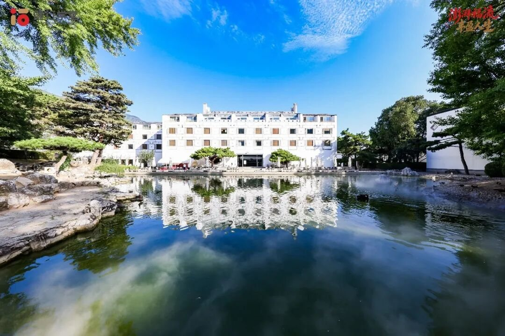
企业家决策心智与幸福领导力计划
以积极心理学为学术根基的 18 个月企业家长期研修
Flow · Flourishing · Leadership
The Program
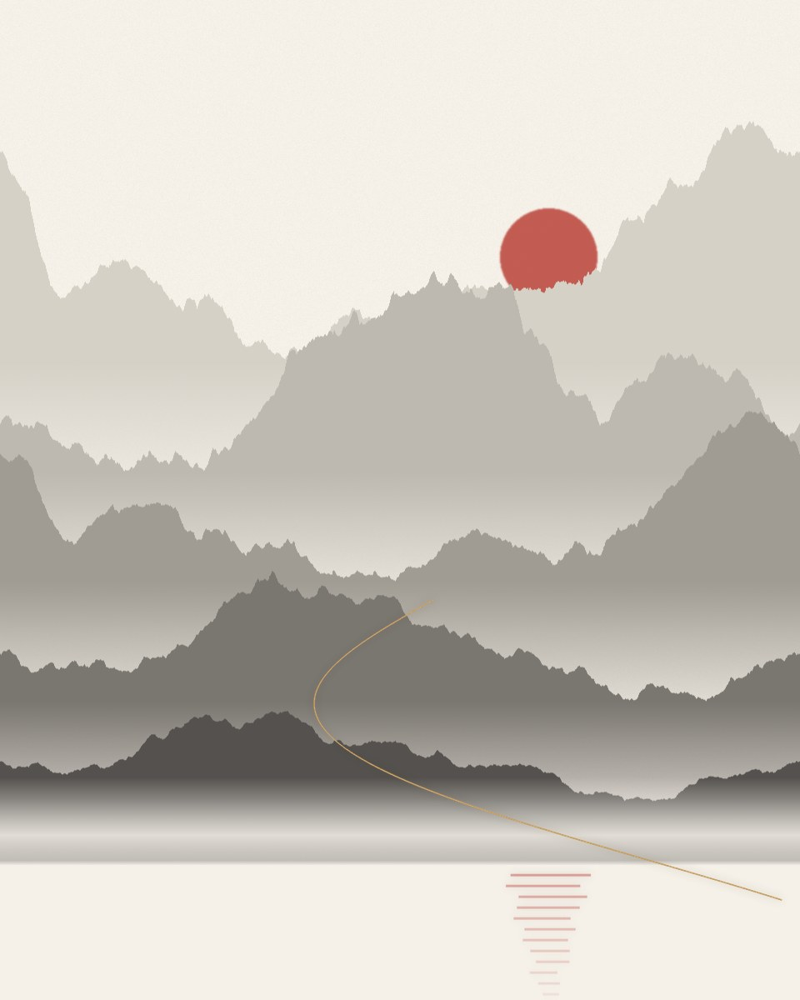
越是在外面杀伐决断的人，越可能在深夜面对一个无人可问的问题：我到底要把这家企业、这一生，带向哪里？
不确定性、增长瓶颈、组织内耗、AI 冲击，以及无人共担的重负，正在反复拉扯每一位企业创始人、核心决策者与家族企业接班人。决策越来越难，快乐越来越少，责任越来越重，内心越来越空。
你缺的不是又一门管理课，而是一次对决策心智与生命状态的系统校准。
健行学堂「企业家决策心智与幸福领导力计划」以积极心理学为学术根基，结合商业资本视角与企业经营实践，在熟悉的商业知识之外，引入人生智慧与中华文化，并把学习安放在山清水秀的场域之中。
理念：正心明德，知行合一。
Curriculum
企业家的成长，最终要体现在重要时刻的判断、复杂关系中的选择，以及面对变化时持续行动的能力上。四个模块各自回答一个根本问题，又共同构成一个持续更新的成长闭环。
审视认知盲区与经验惯性，提升重要选择中的判断质量。
彭凯平 钟年 徐井宏
2026 年 9 月 · 北京香山
理解人与人的互动，经营信任、凝聚共识，为行动汇聚支持。
彭凯平 樊富珉
2026 年 11 月 6—8 日 · 北京
在 AI 加速的时代，关注情绪调节、压力管理与心理韧性，为持续投入建立稳定的身心基础。
陈德中
时间以官方通知为准
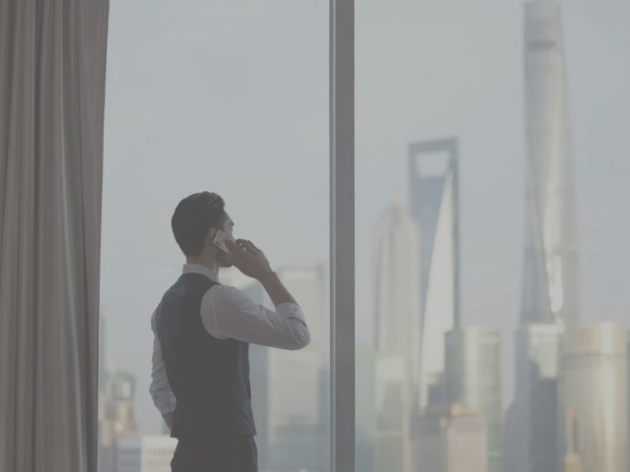
MODULE 04将目光投向长远，厘清值得坚持的方向与价值。
彭凯平
时间以官方通知为准
以使命校准选择，以身心状态支持行动，在关系与实践中检验判断，再将新的发现带回自我觉察与认知更新。让所学不断回应真实问题，也让个人成长与事业发展相互促进。
How We Learn
18 个月提供改变所需要的时间，66 天训练提供改变所需要的练习密度。学习贯穿课堂、日常与更广阔的真实场景。
理论讲授与沉浸式工作坊相结合，通过场景化实训、现场演练与即时反馈，让团队分歧、合作协商与家庭对话都成为学习与练习的起点。每 2—3 个月一次，精品小班。
将所学融入真实的压力、沟通与决策场景。轻量练习、老师陪伴、同伴支持与定期复盘，一次只练一个核心习惯，让需要提醒的觉察逐渐成为习惯。
走出熟悉的环境，把课堂思考带入产业、人文与自然场域。人文山水研学与标杆企业访学，带着问题出发，为经营选择寻找新的参照。
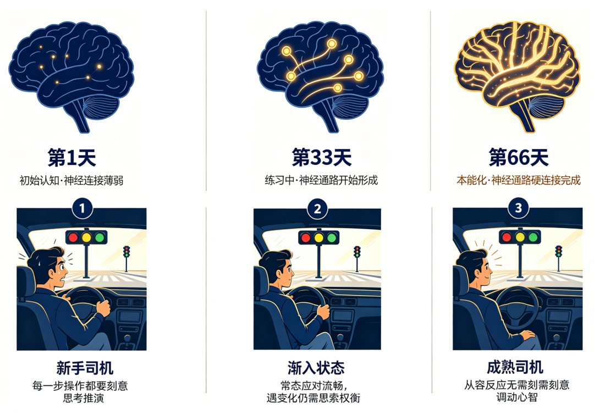
课程不能替企业家作决定，却能帮助你在转型、投资、用人与合作等关键节点上，想得更清楚，判断得更稳。一门课真正的含金量，要等企业家回到经营现场后才会显现。
课程迭代后，学员可免费复训；结业后持续参与校友研学、游学与常态化校友活动。
Faculty
积极心理学、团体心理辅导、文化心理学、正念科学与企业经营实践，在同一间教室里交汇。
清华大学心理与认知科学系教授，清华大学全球产业研究院院长；曾任美国加州大学伯克利分校心理学系终身教授；中国积极心理学发起人。
认知觉醒 · 元认知 · 关系力与感召力 · 幸福科学
清华大学心理学系教授（荣休），北京师范大学心理学部临床与咨询心理学院院长；三十余年深耕团体心理辅导的教学、研究与实践。
团体工作坊 · 积极沟通 · 信任建立与关系修复
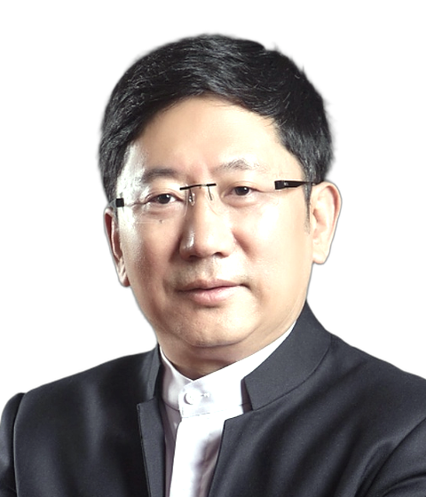
中关村龙门投资董事长，清华大学教授；曾任清华控股董事长。
AI 时代 心力制胜 · 「心力—本事—机遇」三元模型
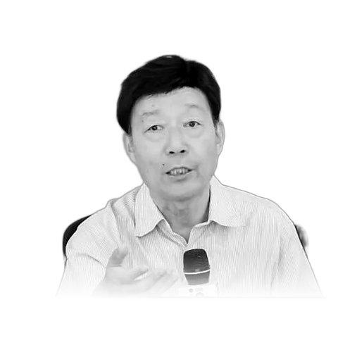
武汉大学哲学学院教授、博士生导师，长期从事文化心理学研究。
中华文化与生命觉醒 · 志向与意义
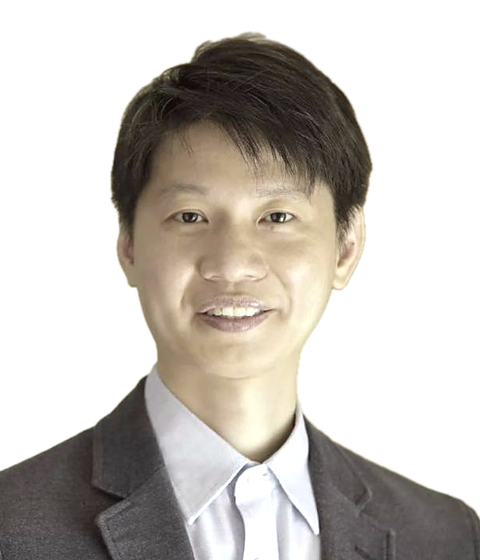
加州健康研究院正念中心联合创始人。美国密歇根州立大学心理咨询硕士，持台湾心理师执照，麻省大学医学院正念中心培训合格的正念减压（MBSR）师资。1995 年开始修习正念禅修，长于东方禅法与西方心理学的整合应用，在台湾推动正念进入企业与医疗体系。
正念科学 · 专注力 · 情绪调节 · 企业正念培训
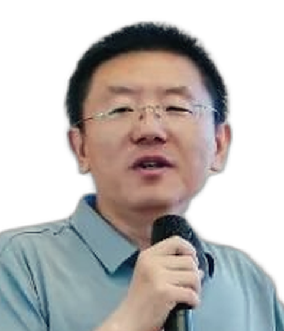
清华大学社会治理与发展研究院培训办公室专项培训师，彭凯平教授课题组成员。
积极心理学在企业经营中的应用
Field Notes
2026 年 9 月，首期学员在北京香山完成三天的学习与共创。一场关于观察与注意力的互动训练，让同学们发现：即使认真观察、反复思考，我们所看见的，仍可能只是现实的一部分。
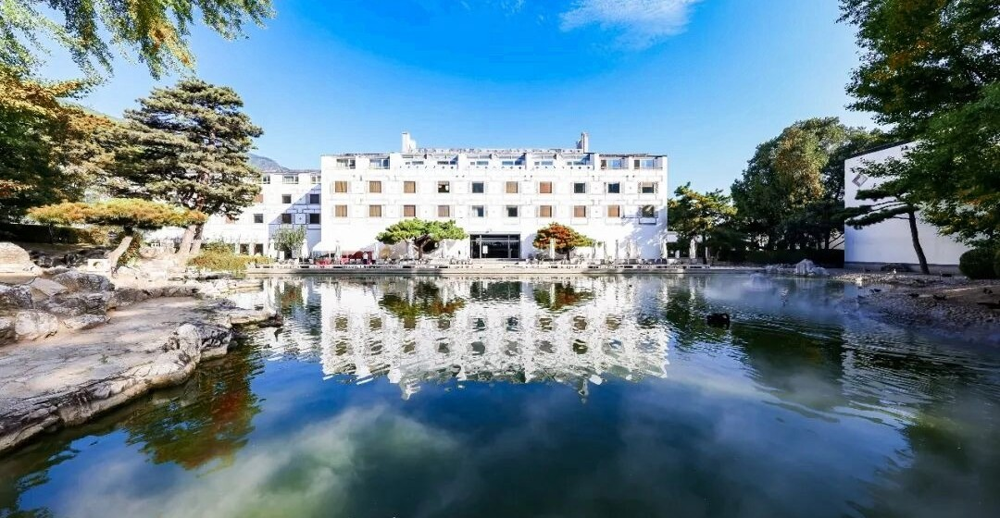
认知觉醒 超越自我
从赢者的诅咒到元认知的升华
你们是能改变别人命运的人，影响那些有影响的人，成就那些有成就的人。
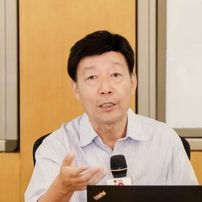
LECTURE 02中华文化与生命觉醒
为人生留一座亭子
向上生长，向下生根，人生不必只活成一个方向。
AI 时代 心力制胜
把握本质、遵循常识、聚焦关键
活在当下，做你自己，安于良知。更靠谱，更智慧，更幸福！
课堂片段
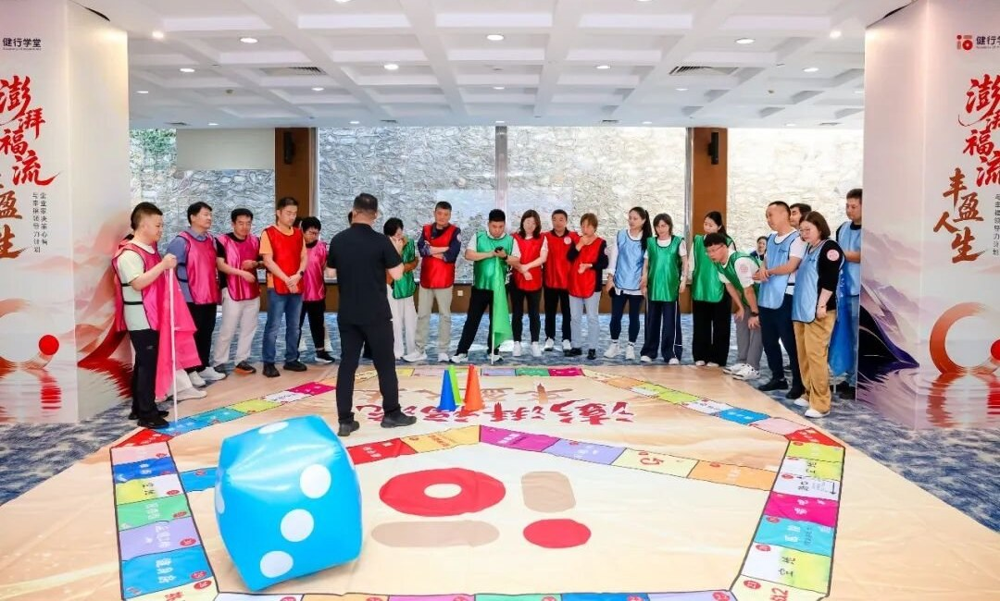
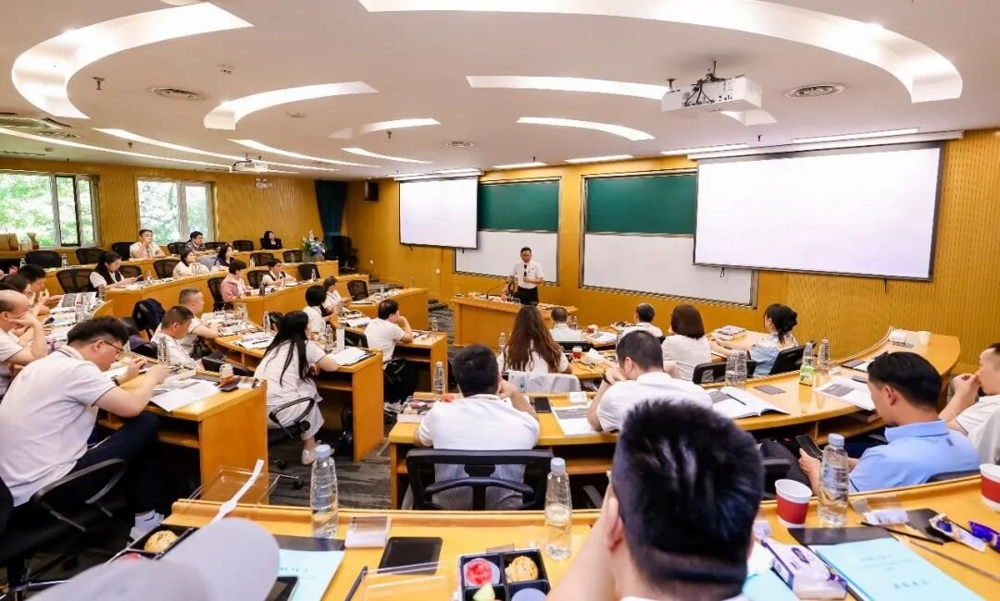
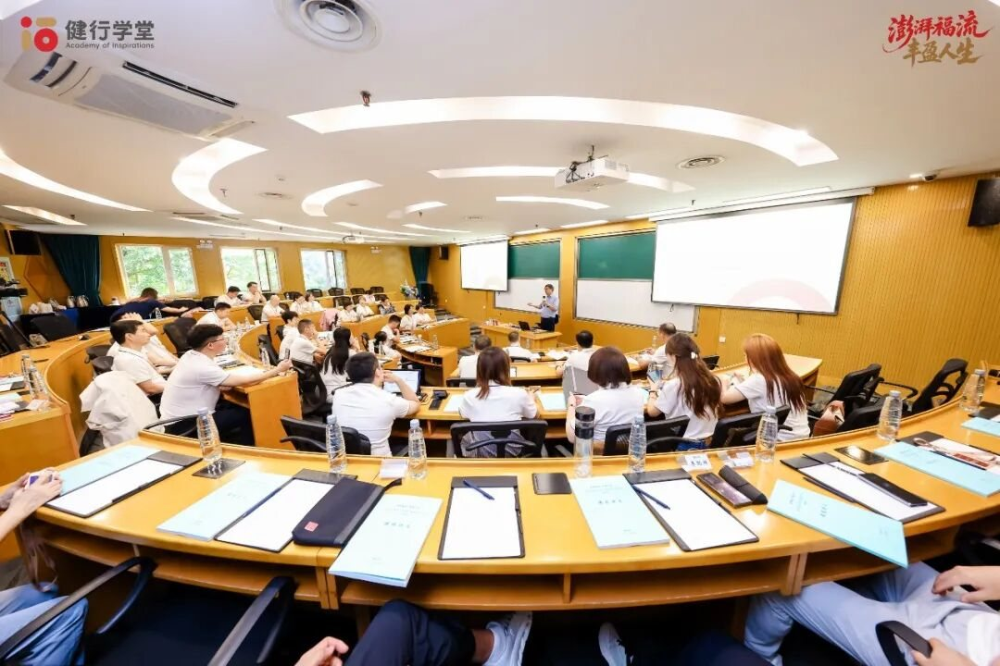
Voices
商学院教会我们的是「成事之术」，而健行学堂带给我们的，是「立身之道」。
墨湃，首期学员 ·《为什么读遍长江、中欧商学院，依然找不到人生的归属感？》
最高级的企业管理，是管理者的心智管理；最核心的组织竞争力，是团队的心理资本与积极能量。
溪云，首期学员 ·《以积极心理学修己 以认知觉醒治企》
In the Field
2026 年 8 月 8 日，健行学堂与长江商学院北训营共同策划「北训营 · 早餐跑第 7 期」。主题「林间轻奔跑 · 心力启增长」：5 公里森氧晨跑，随后是积极心理学专题分享与校友交流。
分享《积极心理学：企业家不可忽视的「隐性竞争力」》，把习得性乐观、PERMA 幸福五支柱与品格优势等框架，落到市场波动中的决策韧性、长期高压下的情绪管理、团队优势识别与创始人的长期心力平衡四类现实课题上。
当身份与头衔暂时退到身后，留下的是彼此陪伴、相互鼓励和一起抵达的过程。
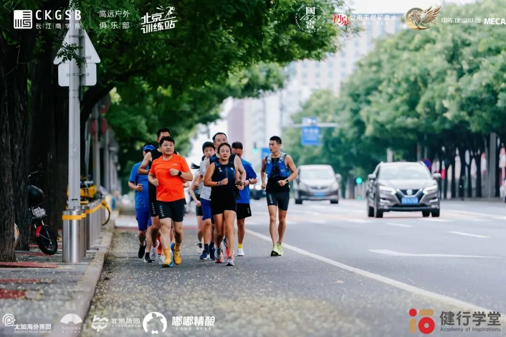
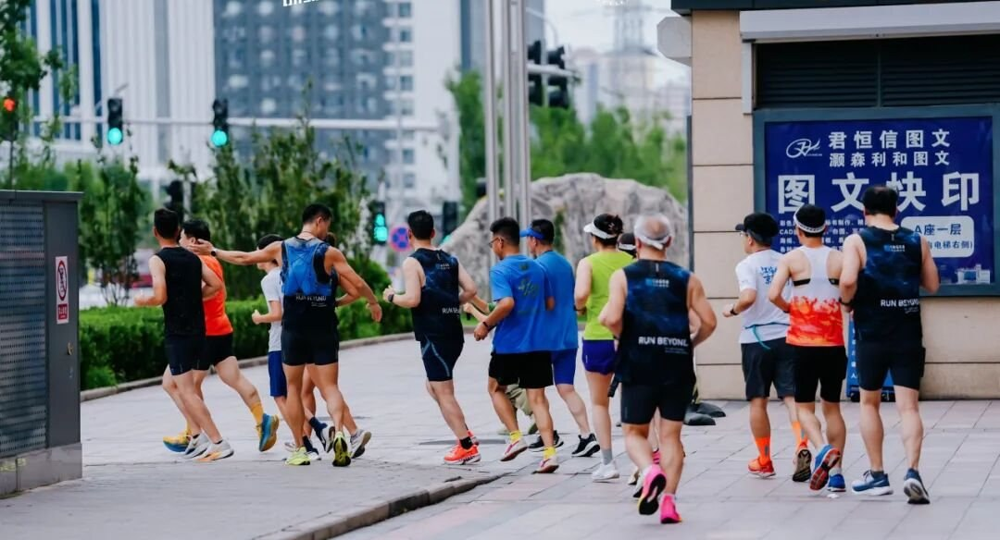
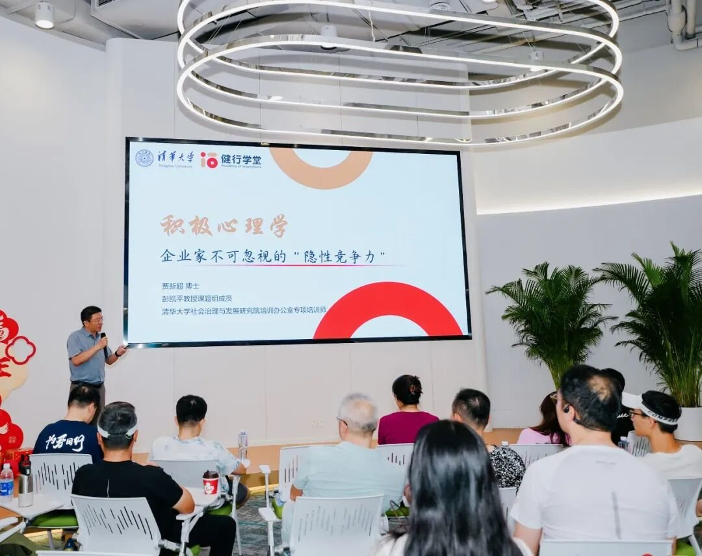
Journal
关于企业家心智、关系与幸福的长文。原文发布于微信公众号「健行学堂」。
About
健行学堂是一家专注企业家长期成长与高质量校友网络建设的终身学习平台，使命是赋能那些正在影响世界的人，共同成就更幸福、更健康的人生。健行学堂由北京满满福流文化科技有限公司运营。「福流」是积极心理学中 Flow 的中文译名：全情投入、物我两忘的最佳体验状态。
面向企业创始人、董事长、总裁、核心决策者与家族企业接班人的 18 个月长期研修。
将现代积极心理学与企业培训实务结合，为企业提供系统化、可落地的员工心理赋能与发展方案，让组织绩效与员工幸福双向提升。
每期课程结束后，持续举办研学游学、常态化校友活动与智囊研讨，聚焦企业家，同频一行人。
Admissions
AI 可以让能力平权，AI 不会让人心同心。